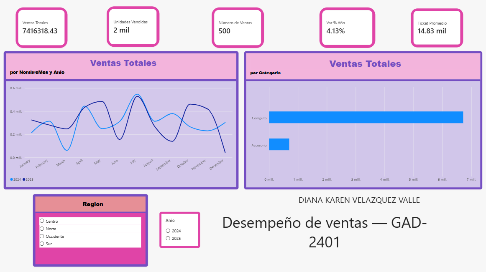
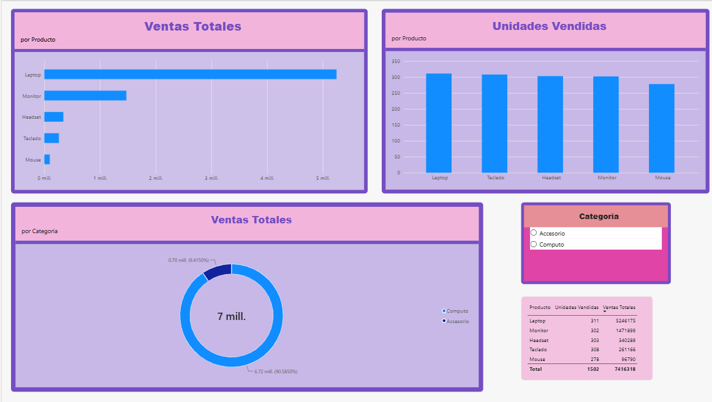
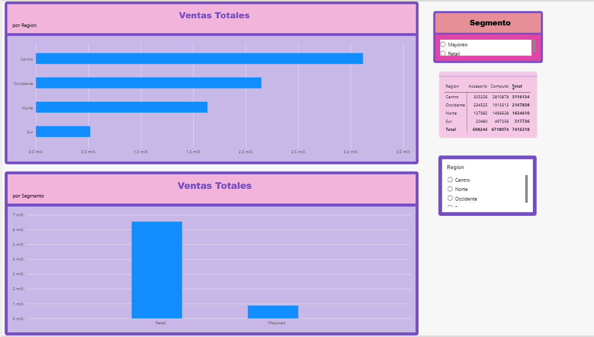
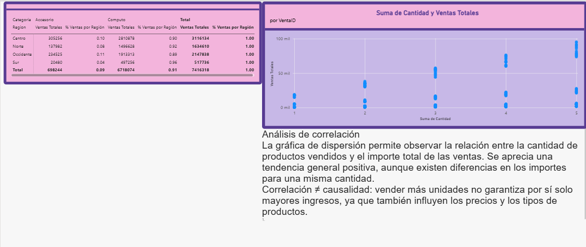

🧹
Datos preparados
Transformación de tipos, revisión de calidad y organización de las tablas en Power Query.
De datos de ventas a decisiones informadas: limpieza, modelo estrella, visualizaciones y análisis de asociaciones en un solo proyecto.
Este caso de negocio explora transacciones comerciales mediante Power BI. El propósito es identificar patrones de ventas por región, segmento y categoría, y distinguir entre relaciones estadísticas y explicaciones causales.
Transformación de tipos, revisión de calidad y organización de las tablas en Power Query.
Una tabla de hechos conectada con dimensiones de cliente, producto y fecha.
Reportes interactivos para explorar ventas, productos, clientes y asociaciones.
El proceso ETL convierte los archivos originales en datos listos para el modelo analítico.
Importación de cuatro archivos CSV: hechos_ventas, dim_cliente, dim_producto y dim_fecha.
Promoción de encabezados, ajuste de fechas, identificadores y campos numéricos; revisión de valores vacíos y errores de conversión.
Aplicación de cambios y validación de relaciones activas entre hechos y dimensiones.
La tabla de ventas concentra las transacciones. Las dimensiones permiten analizarlas desde distintas perspectivas.
Relaciones configuradas: muchos a uno (*:1), con filtro en una sola dirección desde cada dimensión hacia hechos_ventas. El diagrama es esquemático.
El informe de Power BI está organizado en cuatro páginas: Resumen de Ventas, Análisis de Productos, Análisis de Clientes y Asociaciones y Hallazgos.
Gráfico ilustrativo de la clasificación visible en el informe; no sustituye los importes exactos de Power BI.
La visualización permite contrastar el comportamiento comercial de ambos segmentos y explorar sus diferencias con filtros.
La matriz combina región y categoría para identificar dónde se concentra la facturación y comparar la composición de ventas.
Diagrama conceptual para ilustrar la distribución. La evidencia del análisis es la gráfica de Power BI, que debe añadirse en la sección siguiente.
Se observa una tendencia visual general positiva entre cantidad e importe, con diferencias importantes para ventas de igual cantidad. Esto es compatible con la influencia de precios y tipos de producto.
Importante: una nube de puntos no cuantifica por sí sola la fuerza de correlación. Para reportar un coeficiente, se debe calcular Pearson o Spearman sobre las observaciones.
Para completar la evidencia pública, exporta capturas de las páginas del informe y súbelas a este mismo repositorio con los nombres indicados. Aparecerán aquí automáticamente.

Resumen de ventasArchivo: resumen.png
Análisis de productosArchivo: productos.png
Análisis de clientesArchivo: clientes.png
Asociaciones y hallazgosArchivo: asociaciones.pngLa región Centro destaca en el informe observado, mientras que las comparaciones por segmento y categoría muestran que el comportamiento de ventas no es uniforme.
La dispersión sugiere una asociación positiva entre cantidad e importe, pero no basta para establecer causalidad ni una magnitud estadística precisa.
Validar calidad de datos, calcular un coeficiente de correlación y complementar la publicación con capturas del informe y, si está permitido, su enlace público.
Proyecto académico elaborado con Power BI Desktop y publicado mediante GitHub Pages. Los elementos decorativos y esquemas de esta web no son datos adicionales del conjunto original.